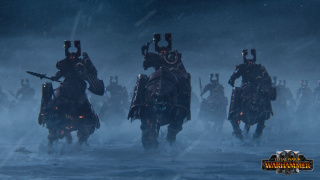
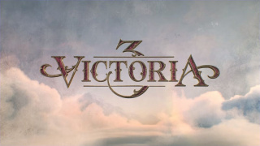
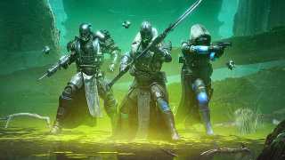
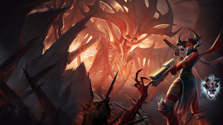
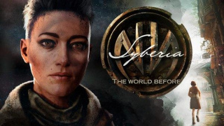
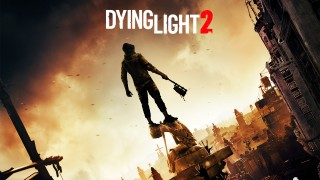
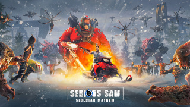
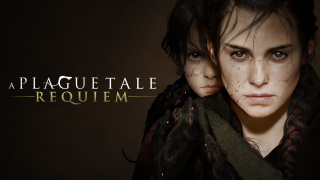
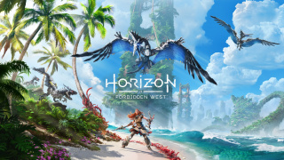

Лабораторная работа №3: Работа с таблицами.
| Место |
Наименование |
Консоль |
Иконки |
Описпние |
| 1 |
Stray |
PC, PS4, PS5 |
|
Stray – приключенческая игра от третьего лица, действие которой разворачивается на неоновых улочках и в угрюмых, грязных подворотнях гибнущего кибергорода. Блуждайте по подвалам и крышам, защищайтесь от неожиданных угроз и распутывайте загадки этого неприветливого места, где нет никого, кроме безучастных дроидов и опасных тварей. |
| 2 |
Total War: Warhammer 3 |
PC |
 |
Драматический финал трилогии Total War: WARHAMMER уже здесь. Соберите войска и войдите в Царство Хаоса — обитель невообразимых ужасов, где будет решаться судьба всего мира. Обуздаете ли вы своих демонов… или же возглавите их? |
| 3 |
Victoria 3 |
PC |
 |
Paradox Development Studio предлагает вам построить идеальное общество в суматохе безумного XIX века. Найдите способ уравновесить общественные противоречия и заслужите место под солнцем в Victoria 3 — одной из самых ожидаемых игр в истории студии. |
| 4 |
Destiny 2: The Witch Queen |
PC, PS4, PS5, Xbox One, Xbox Series |
 |
Погрузитесь в мир-Престол Саватун и узнайте, как она и ее Сияющий Улей украли Свет. Создавайте новое оружие и овладейте глефой, чтобы пережить встречу с истиной в паутине лжи. |
| 5 |
Metal: Hellsinger |
PC, PS5, Xbox Series |
 |
Сокрушайте врагов, следуя за тактом метала и своей мести, в адском путешествии по восьми областям преисподней. Пусть они боятся ритма. Metal: Hellsinger — ритм-шутер от первого лица, где вас ждет множество демонов, крутого оружия и тяжелой музыки. |
| 6 |
Syberia: The World Before |
PC, PS4, PS5, Xbox One, Xbox Series, Nintendo Switch |
 |
Распутайте причудливые переплетения судеб нью-йоркского юриста Кейт Уокер, чью жизнь полностью перевернула тяга к приключениям, и Даны Роуз, молодой и многообещающей пианистки из Вагена, над чьей карьерой нависла тень Второй мировой войны. Совершите побег из тюрьмы, наведайтесь на заброшенные кладбища, исследуйте вершины гор и окунитесь в водоворот приключений. |
| 7 |
Dying Light 2: Stay Human |
PC, PS4, PS5, Xbox One, Xbox Series |
 |
Вы скиталец, которому по силам решить судьбу Города, но ваши исключительные способности имеют свою цену. Вас преследуют непонятные и странные воспоминания. В погоне за правдой вы оказываетесь в самом эпицентре боевых действий. Оттачивайте свое мастерство, побеждайте врагов и находите союзников. Для этого вам понадобятся не только кулаки, но и смекалка. Узнайте мрачные секреты сильных мира сего, выберите сторону и возьмите судьбу в собственные руки. Что бы вы ни делали, не забывайте об одном... Всегда надо оставаться человеком. |
| 8 |
Serious Sam: Siberian Mayhem |
PC |
 |
...сердце России. Эти земли огромны, холодны и настолько непредсказуемы, что даже инопланетные захватчики чувствуют себя как-то потерянно. Побывайте в прекрасном и опасном мире, где на пяти новых уровнях вас ждут арктические побережья, безлюдные леса, заброшенные деревни и жуткий город-призрак. В Сибири хватает места, чтобы сражаться и исследовать её столько, сколько захочется. |
| 9 |
A Plague Tale: Requiem |
PC, PS5, Xbox Series |
 |
Брат и сестра отправляются в новое странствие в суровом, полном тьмы мире. Решайте, на что вы готовы пойти, чтобы выжить и спасти своих любимых. Что бы вы ни выбрали, к вашим услугам богатый арсенал оружия, инструментов и магических сил. |
| 10 |
Horizon Forbidden West |
PS4, PS5 |
 |
Исследуйте дальние земли, сражайтесь с гигантскими внушающими трепет машинами и встречайте новые удивительные племена в пост-апокалиптическом мире далекого будущего в Horizon. Мир на краю гибели. Свирепые бури и смертельные болезни обрушились на разрозненные остатки человеческих племен, а новые устрашающие машины бродят по границам их земель. Жизнь на Земле находится на пороге очередного вымирания, и никто не знает причину. |